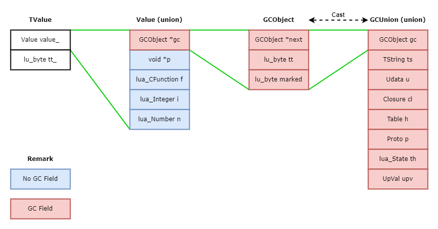

基础类型
1 | // (lua.h) |
| 宏 | 类型描述 | 对应数据结构 |
|---|---|---|
| LUA_TNONE | 无效类型 | 无 |
| LUA_TNIL | 空 | 无 |
| LUA_TBOOLEAN | 布尔 | 无 |
| LUA_TLIGHTUSERDATA | 指针 | void * |
| LUA_TNUMBER | 数值 | lua_Number |
| LUA_TSTRING | 字符串 | TString |
| LUA_TTABLE | 表 | Table |
| LUA_TFUNCTION | 函数 | CClosure、LClosure |
| LUA_TUSERDATA | 指针 | Udata |
| LUA_TTHREAD | Lua虚拟机、协程 | lua_State |
宏 LUA_NUMTYPES 指有效数据类型的数量，即0~8共9个
其中 LUA_TLIGHTUSERDATA 和 LUA_TUSERDATA
均是指针，userdata 指一些外部的用户知晓的内存块，它们的类型不被 Lua
定义，用指针来访问它们以在 Lua
中实现对外部数据的操作。两者的区别在于，LUA_TLIGHTUSERDATA
的分配释放由外部自己管理，所以 Lua
将它视为值类型，因为不需要分配任何额外空间来存储数据，仅仅只是一个指针而已。LUA_TUSERDATA
则由内部管理，Lua 为它定义了 Udata
结构，存储它的数据，并且加入GC的管理。
需要注意的是，这些宏并不是真正的类型，只是用某个数字代指这个类型，真正的类型是表格中的最后一列：对应数据结构
动态类型是如何实现的？
Lua 是动态类型的语言，动态类型指一个变量在不同时刻可以是不同类型的
它通过一个通用结构体 TValue
来定义任意的类型，源码如下：
1 | /* |
简单来说，tt_
用于标记这个结构体是什么类型，value_
则存储实际的值数据。当一个变量需要变为其他类型时，改变它的 tt_
字段的值，同时设置对应的 Value_ 值即可做到。
类型标记（Type Tag）
tt_ 全称是 Type Tag ，用于标记当前对象的类型，它被声明为
lu_byte 类型，lu_byte 宏代指 unsigned char
类型（占一个字节，范围0~255），由于基础类型的标记最高值是8，因此低4位被设计用于标记基础类型，其它的位设计如下：
| 7 bit | 6 bit | 5-4 bit | 3-0 bit |
|---|---|---|---|
| reserved | GC Tag | variant type tag | basic type tag |
从表中可以看到，除了低4位被用于标记基础类型，Lua还在 bits(4-5) 设计了变种类型，变种类型让 Lua 对类型标记进一步划分，用于内部更加多样化的数据支持、更加精确地处理数据、甚至是提升性能。如下是 Lua 将数值类型 LUA_TNUMBER 进行变种得到整型数和浮点数的代码：
1 | // (lobject.h) |
除了 variant type tag 和 basic type tag，还有用于标记是否可被回收的 GC Tag。而 bit 7 目前保留没有任何作用
TValue的结构设计（Value、GCObject和GCUnion）

TValue
TValue 结构如上图所示，包含一个联合体
value_ 和一个类型标记 tt_，对应源码：
1 | /* |
tt_ 标记了联合体 value_
分配的空间中值的具体类型，由此知道该以什么样的结构使用这块内存。另外，前述内容也提到
tt_
的第7位标记了当前类型是否是可回收类型，以下代码是判断一个对象是否是可回收的源码：
1 | /* Bit mark for collectable types */ |
Value
再看 Value 的设计，这个域负责存储实际的值，我们知道 Lua
有自己的垃圾回收机制，因此它的类型设计包含了可回收和不可回收两种。
在 Value 这一层面，Lua
将这两种类型区分开了，可回收的对象表达为一个指针，而没有直接存储它。不可回收的类型则全部声明为联合体的域。整个联合体只是在栈上分配了一个空间，存储这些域的其中之一：
- GCObject *gc：指向一个可回收对象的内存地址
- void *p：本质就是一个指针，Lua中称它为
lightuserdata，和userdata不同，前者不需要 Lua 管理内存，只是作为变量保存一个地址。后者则需要 Lua 负责管理内存 - lua_CFunction f：本质上也是一个指针，指向一个 C 函数
- lua_Integer i：存储整型数值
- lua_Number n：存储浮点数值
GCUnion和GCObject
为了更好地理解 GCObject，我们要先了解
GCUnion 这个联合体
GCUnion 是真正定义GC对象存储位置的结构，Lua
中的全部可回收类型都定义为它的域
其中比较特殊的是 GCObject，它只包含一个
CommonHeader 宏，源码定义如下：
1 | /* |
CommonHeader 包含三个域：
- GCObject *next：这个指针指向下一个 GC 对象，所有 GC 对象通过各自的 next 指针链接起来形成整个 GC 链表
- lu_byte tt：也是类型标记，和
tt_相同，但由于GCObject在堆内存中单独分配，所以这里为它再存了一份，便于访问 - lu_byte marked：GC 阶段的标记
Lua 中需要 GC 的类型很多，但在作为可回收对象时，都是统一作为
GCObject 类型。这里很多人会产生一个疑问：GCUnion
作为一个联合体，同一个内存如何转换 GCObject
和其他类型？
要回答这个问题，需要看其他 GC 类型的定义：
1 | typedef struct TString { |
现在应该明白了，所有类型的内存头部都是相同的结构
CommonHeader，相当于需要把一个类型作为
GCObject 的时候，只是访问了这个头部结构的内存数据罢了。
除开 GCObject ，其他的类型我们先简单了解下：
| 类型 | 说明 |
|---|---|
| TString | 字符串 |
| Udata | 用户数据指针 |
| Closure | 闭包 |
| Table | 表 |
| Proto | 函数原型 |
| lua_State | Lua虚拟机 |
| UpVal | 上值 |